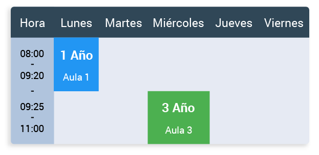
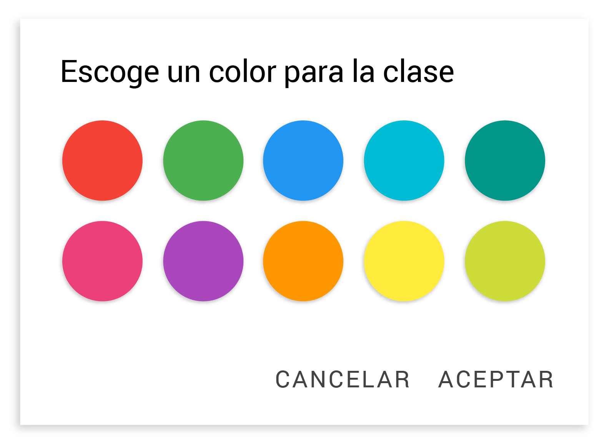

Horario
Permite crear y editar tu horario semanal con la posibilidad de agregar clases de distintas asignaturas clasificadas por colores para que sea fácil de identificar.

¿Cómo agregar turnos de clase al horario?
Puedes agregar nuevos turnos de clase al horario haciendo clic en el botón flotante que se encuentra en la esquina inferior derecha. Aparecerá un cuadro de diálogo con algunas opciones que deberás completar:
- Lugar: donde se va a desarrollar la clase (opcional).
- Asignatura.
- Nombre del grupo: nombre del grupo al que se le va a dar la clase.
- Día de la semana: haz clic en el selector para escoger el día de la semana en el que se va a realizar la clase.
- Hora de inicio: haz clic en este botón y elige la hora en la que va a dar inicio a la clase. Es necesario que coloques correctamente la hora de inicio, puesto que la aplicación ordena los turnos en dependencia de esto.
- Hora de fin: hora en la que debería finalizar la clase.
- Color: a la derecha, bajo el campo Asignatura, verás un rectángulo de color gris. Al hacer clic sobre él, te aparecerá un selector de color para que puedas elegir uno y así poder identificar fácilmente la asignatura.

Por último, presiona "aceptar" y si has completado todos los campos obligatorios, verás aparecer un nuevo turno de clase en el horario.
¿Cómo eliminar un turno de clase del horario?
Tan solo debes mantener presionado un turno de clase cualquiera y aparecerá un pequeño diálogo flotante con la opción "eliminar". Al hacer clic en ella, se eliminará inmediatamente el turno de clase del horario.
¿Cómo editar un turno de clase ya creado?
Para hacerlo, solo debes hacer clic en cualquier turno de clase y aparecerá el mismo diálogo que nos sale al crear un nuevo horario. Allí podrás cambiar la configuración que tenía previamente dicho turno.